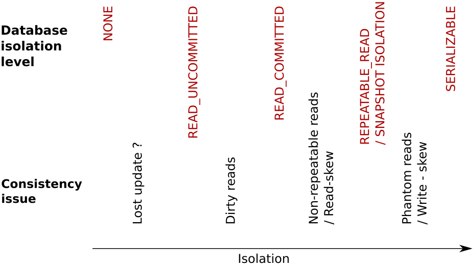

t1 --- read x <- 2 --- write y -> 6 --- commit
t2 --- read y <- 3 --- write x -> 7 --- commitACID vs. BASE
Why transactions?

ACID
A for atomicity
C for consistency
I for isolation
D for durability
Isolation

Write skew
at start
x = 2,y = 3constraint defined:
a + b =< 10
Isolation in real world
Isolation for distributed world

Serializability
Linearizability
Distributed (strict) serializability
source: Martin Kleppmann
CAP
Consistency in baseball game
CAP - CP
CAP - AP
CALM, ACID 2.0, CRDT
- CALM
consistency as logical monotonicity
- ACID 2.0
associative, commutative, idempotent, distributed (whatever)
- CRDT
conflict-free replicated data type
SQL vs. NoSQL vs. NewSQL
source: https://blogs.the451group.com
2PC
3PC
Distributed commitment
2PC
3PC
Paxos
Distributed transactions
Percolator’s transactions
RAMP transactions
(Google Spanner)
Compensating (SAGA) transactions
Definition BASE
BA for basic availability
S for soft-state
E for eventual consistency
MSA and consistency